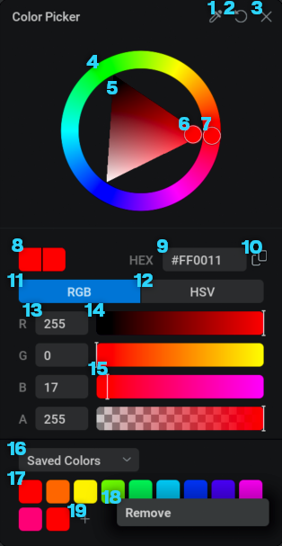
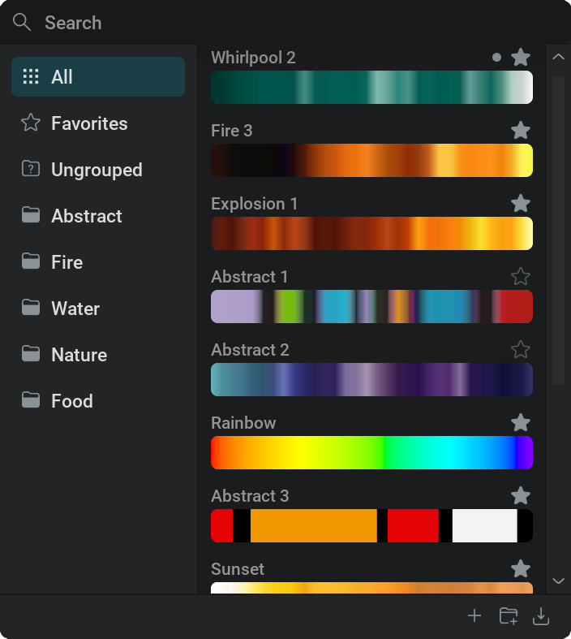
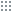
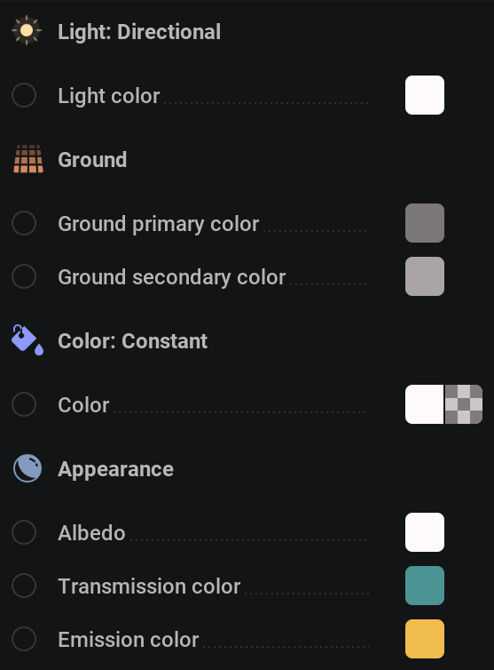
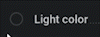

Color#
Color is a category of nodes outputting color values.
 Color Nodes#
Color Nodes#
 Color: Constant#
Color: Constant#
Outputs a single color value.
You can  click on the colored square to open the Color Picker.
click on the colored square to open the Color Picker.
Color Picker#

 Color picker. Hold
Color picker. Hold  and drag to select a color anywhere on the screen. This will select colors even from outside the application!
and drag to select a color anywhere on the screen. This will select colors even from outside the application! Resets the color to the default for that parameter.
Resets the color to the default for that parameter. Closes the color picker. The color will remain at whatever is selected in the color picker. You can also click outside of the color picker to close it.
Closes the color picker. The color will remain at whatever is selected in the color picker. You can also click outside of the color picker to close it.Hue ring. Visualizes all the hues. The selected hue is indicated with a circle 7 You can
click or click and drag anywhere on the circle to select a hue.Brightness and saturation triangle. The three corners represent white, black, and a fully saturated color. The selected value is indicated with a circle 6 You can
click or click and drag anywhere on the triangle to select a color.
Current Color
HEX code. Here, you can type in a hexadecimal code to get a specific color by
clicking in the text field.RGB Mode. This will set the sliders to represent the color in Red, Green, and Blue values. All mapped from 0 to 255.
HSV Mode. This will set the sliders to represent the color in Hue, Saturation, and Value. Hue is mapped circular from 0 to 360 degrees starting and ending with red, using this slider you can see the circle in the Hue ring turning. Saturation and Value are mapped from 0% to 100% ,saturation from grayscale to fully saturated and value from black to whatever is the brightest color based on the hue and saturation.
Channel Values. These represent the numerical value of the slider next to it.
click within the text box to type in a value manually.Channel Sliders. These sliders can be used to change the color. The gradients on the sliders represent what the selected color would be if the indicator 14 was placed on that position. You can
click or click and drag anywhere on the slider to select a color.
Swatch Dropdown.
Saved Colors Holds a palette of saved colors 16 You can save the selected color using the
icon 18. You can remove a saved color by
clicking on one and selecting Remove 17.
Recent Colors Holds a palette of the last 9 colors used. When the color picker is closed, the selected color will be stored as the most recent color all the way to the right in the Recent Colors palette moving all the other colors one spot to the left and discarting the first one on the left.
 Color: Gradient#
Color: Gradient#
Interpolation Color Space: A dropdown menu with different methods of interpolating color from one point in the color gradient to another.
- Color Gradient: Creates a range of colors.
Add a point by
clicking on the gradient.Move a point holding
and dragging.Remove a point by selecting it with
and pressing Delete or by clicking on it and selecting Delete.Edit the color of a point by double-clicking
on it or by clicking on it and selecting Change Color.Use the
color picker to click and drag over any application to source its colors for creating a gradient.
- The color gradient context menu can be accessed by clicking anywhere on the color gradient and has the following options:
Copy: Copy the color gradient (all points and interpolation color space).
Paste: Paste the color gradient. This will overwrite everything and replace it with the copied color gradient.
Reset: Resets the color gradient back to a two-point black to white color gradient.
Sort By Luminance: Rearranges all points based on luminance from dark to light.
Sort By Hue: Rearranges all points based on hue from 0 to 360 degrees.
Sort by Saturation: Rearranges all points based on saturation from low saturation to high saturation.
Equally Distribute: Rearranges all points to be evenly spaced over the color gradient.
Shuffle: Randomly rearranges all points. This option gives a random result every time it’s used.
Reverse: Rearranges all points backwards putting the last point first and vice versa.
{kind=link}

Color Gradient Presets
Clicking the button with the  icon will open the gradient presets window.
Here, you can organize, update, import, and export all your color gradients!
icon will open the gradient presets window.
Here, you can organize, update, import, and export all your color gradients!
- The section on the left is a list of categories or folders that can contain gradient presets:

All contains all saved gradient presets. Favorites contains all presets marked as favorite by toggling the star icon on it.
Favorites contains all presets marked as favorite by toggling the star icon on it.Ungrouped contains all presets that are not within a folder. A preset will end up in ungrouped if it’s either moved there or added when the All,
Favorites, or Ungrouped category is selected. Folders can be created by the user to organise gradient presets. This is done using the
Folders can be created by the user to organise gradient presets. This is done using the  button in the bottom right corner. If a folder is selected, newly added presets will be put in that folder. You can rename or delete a folder by clicking on it and selecting Rename or Delete. You can also move the folder position by clicking and dragging it.
button in the bottom right corner. If a folder is selected, newly added presets will be put in that folder. You can rename or delete a folder by clicking on it and selecting Rename or Delete. You can also move the folder position by clicking and dragging it.
- The section on the right is a list of color gradient presets:
The active preset is marked with a
 grey dot next to the icon.
grey dot next to the icon.The
icon can be toggled to favorite or unfavorite a gradient preset.- Clicking on a gradient preset will apply it to the color gradient parameter.
Shift +
clicking on a gradient preset will apply it to the color gradient parameter without closing the gradient presets window.You can
click and drag a gradient preset to move it to a different position in the list.
- The context menu which appears when clicking on a gradient preset has the following options:
 Rename: Allows you to type in a new name for the gradient preset.
Rename: Allows you to type in a new name for the gradient preset.- Favorite/
 Unfavorite: Toggles if the gradient preset is favorite or not. Using the icon on the gradient preset does the same thing.
Unfavorite: Toggles if the gradient preset is favorite or not. Using the icon on the gradient preset does the same thing.  Update: Overwrites the gradient preset with the current color gradient parameter.
Update: Overwrites the gradient preset with the current color gradient parameter. Move To…: Let’s you put a gradient preset into a specific folder.
Move To…: Let’s you put a gradient preset into a specific folder. Export…: Opens a file browser to store the gradient as a JangaFX Color Gradient (.jfxcg) file in a desired location (Note that the Interpolation Color Space is also saved in the preset) or as a .png file that can be loaded into most software and used as, for example, a color input for another shader. The image resolution is 512 by 12 pixels meaning 512 different colors could be stored.
Export…: Opens a file browser to store the gradient as a JangaFX Color Gradient (.jfxcg) file in a desired location (Note that the Interpolation Color Space is also saved in the preset) or as a .png file that can be loaded into most software and used as, for example, a color input for another shader. The image resolution is 512 by 12 pixels meaning 512 different colors could be stored.Delete: Removes the gradient preset completely. This can’t be undone!
{kind=link}
{kind=link}
{kind=link}
The  search function on the top lets you search for gradient presets based on their names. It always searches through all the presets regardless of which folder they belong to.
search function on the top lets you search for gradient presets based on their names. It always searches through all the presets regardless of which folder they belong to.
- The bottom of the window also has a couple of options:
Adds the current color gradient parameter as a gradient preset and puts you into rename mode immediately to give your new gradient preset a name.
- Adds a new folder to the gradient presets window and puts you into rename mode immediately to give your new folder a name.
 Opens the file browser where you can select a JangaFX Color Gradient (.jfxcg) file to be added as a gradient preset into the gradient presets window. Embergen Color Gradient (.embercg) files are the old format but can also be imported for backwards compatibility.
Opens the file browser where you can select a JangaFX Color Gradient (.jfxcg) file to be added as a gradient preset into the gradient presets window. Embergen Color Gradient (.embercg) files are the old format but can also be imported for backwards compatibility.
{kind=link}
 Color Selector#
Color Selector#
Outputs a single color from a Color Gradient node based on a specified position on the gradient.
Connecting Color Nodes#
Color nodes can be connected to color parameters.
The color of this parameter will then be controlled in the color node.
A color parameter is recognized by the colored square next to it.
The following are some examples of parameters that can be controlled by color nodes:
{kind=link}

To expose a color parameter pin for connecting a color node

you have to set the override state to Pin Override by  clicking the icon next to the parameter.
clicking the icon next to the parameter.
A color parameter can also have two squares next to it as with the  Color: Constant node. This means that the parameter also supports an alpha channel.
Color: Constant node. This means that the parameter also supports an alpha channel.